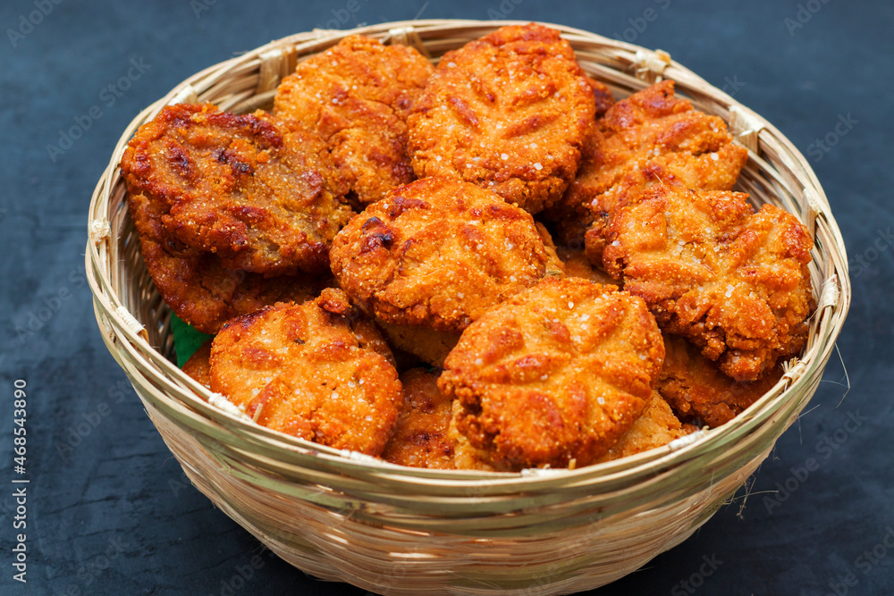

Famous Foods of Jharkhand
Rugda
Rugda Recipe:
- Ingredients:
- 1 cup Rugda (dried mushrooms)
- 1 tablespoon mustard oil
- 1 onion, finely chopped
- 1 teaspoon ginger-garlic paste
- 1 tomato, chopped
- 1 teaspoon turmeric powder
- 1 teaspoon cumin powder
- 1 teaspoon coriander powder
- Salt to taste
- Fresh coriander for garnish
- Instructions:
- Soak Rugda in warm water for about 30 minutes. Drain and set aside.
- Heat mustard oil in a pan and add chopped onions. Cook until golden brown.
- Add ginger-garlic paste and cook for a minute.
- Add chopped tomatoes, turmeric powder, cumin powder, and coriander powder. Cook until tomatoes are soft.
- Add the soaked Rugda and cook for about 15 minutes, stirring occasionally.
- Season with salt and garnish with fresh coriander. Serve hot with rice or chapati.
Thekua

Thekua Recipe:
- Ingredients:
- 1 cup wheat flour
- 1/2 cup jaggery, grated
- 1/4 cup coconut, grated
- 1/2 teaspoon cardamom powder
- 1/4 teaspoon baking soda
- 1/4 cup ghee or oil
- Water as needed
- Instructions:
- Mix wheat flour, jaggery, grated coconut, cardamom powder, and baking soda in a bowl.
- Add ghee or oil and mix well.
- Add water gradually and knead into a stiff dough.
- Shape the dough into small discs or oval shapes.
- Heat oil in a pan and deep fry the Thekua until golden brown and crisp.
- Drain on paper towels and let cool before serving.
Chaapar

Chaapar Recipe:
- Ingredients:
- 1 cup rice flour
- 1/2 cup grated coconut
- 1/2 cup jaggery, grated
- 1/4 cup water
- 1/2 teaspoon cardamom powder
- A pinch of salt
- Instructions:
- Mix rice flour, grated coconut, jaggery, cardamom powder, and salt in a bowl.
- Add water gradually and mix until it forms a dough-like consistency.
- Shape the mixture into small round balls or discs.
- Steam the balls or discs in a steamer for about 15-20 minutes.
- Allow to cool slightly before serving.